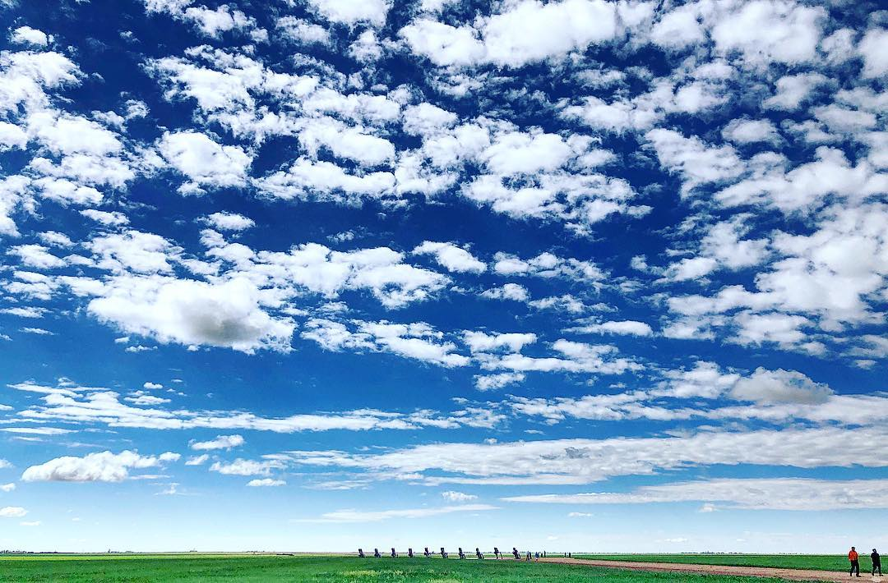

9am - 6pm Wednesday - Sunday

Chip Lord and Doug Michels were architects; Marquez was an art
student at Tulane University in New Orleans, Louisiana.
According to Chip Lord, "Ant Farm was founded as an alternative
architectural practice, kind of an experiment in an attempt to
subvert normal corporate ways of doing architecture."[2]
According to Marquez, "Chip and I were living in the mountains
north of San Francisco, and there was a book meant for kids left
in a bar near where we lived. It was called ‘The Look of
Cars,’[3] and there was something on the rise and fall of the
tail fin. I didn't have a lot to do, so I just sorta drew it up.
I’ve always loved the Cadillacs."[2]
The group claims to have been given a list of eccentric
millionaires in 1972 in San Francisco, identifying Stanley Marsh 3
of Amarillo amongst those who might be able to fund one of their
projects and submitted it to him. Marsh's response began "It's going
to take me awhile to get used to the idea of the Cadillac Ranch.
I'll answer you by April Fool's Day. It's such an irrelevant and
silly proposition that I want to give it all my time and attention
so I can make a casual judgment of it."[4]Cadillac Ranch was
originally located in a wheat field, but in 1997, the installation
was quietly moved by a local contractor to a location two miles
(three kilometers) to the west, to a cow pasture along Interstate
40, in order to place it farther from the limits of the growing
city.[5] Both sites belonged to the local millionaire Stanley Marsh
3, the patron of the project.[6] Marsh was well known in the city
for his longtime patronage of artistic endeavors including the
Cadillac Ranch; Floating Mesa; Amarillo Ramp, a work by land artist
Robert Smithson; and a series of fake traffic signs throughout the
city known collectively as the Dynamite Museum.[7] As of 2013,
Stanley Marsh 3 did not own the Cadillac Ranch;[8] ownership appears
to have been transferred to a family trust some time before his June
2014 death.
Cadillac Ranch is visible from the highway, and though located on
private land, visiting it (by driving along a frontage road and
entering the pasture by walking through an unlocked gate) is tacitly
encouraged. In addition, writing graffiti on or otherwise
spray-painting the vehicles is now encouraged, and the vehicles,
which have long since lost their original colors, are wildly
decorated. Ant Farm artists have encouraged this kind of public
interaction with the cars.